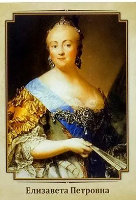

Владимир Святославич

Екатерина I — первая русская императрица, вторая супруга Петра Великого, мать императрицы Елизаветы Петровны.
Родилась 5 (15) апреля 1684 года в семье крестьян из Литвы или Эстонии.
В феврале 1712 года Пётр Первый сдержал своё обещание и повел Екатерину под венец. Церемония состоялась в петербургском Исаакиевском соборе.
Царица родила Петру 11 детей, однако в живых остались только две старшие дочери — Анна и Елизавета.
Екатерина I правила недолго: непрерывная череда балов и кутежей существенно подорвала здоровье императрицы. Скончалась она 6 (17) мая 1727 в Санкт-Петербурге. Причиной смерти стал абсцесс лёгкого.